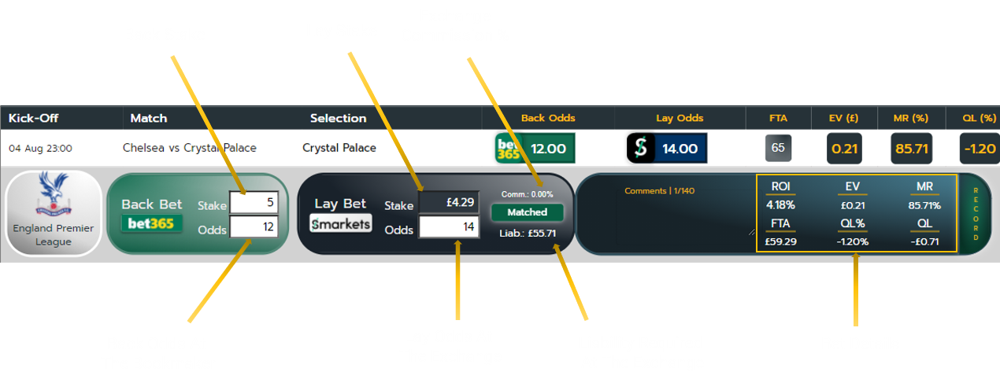
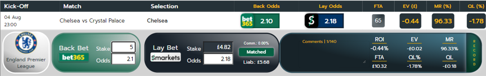
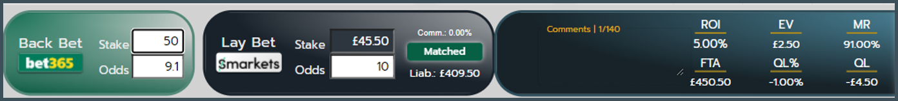

Below you will find some material to help you navigate through our site. Skip ahead by clicking one of titles below.
- What is the 2Up Early Payout offer?
- How can I make a profit?
- FTA occurence indicators
- Settings
- Fixtures/Watchlist and notifications
- My Active bets
What is the 2Up Early Payout offer?
keyboard_arrow_up
2Up is one of the most exciting offers in the matched betting world. It can be found on Bet365 and Paddy Power.
It is also one of the simplest matched betting offers to understand and can be very lucrative.
Bet365’s terms for the Early Payout offer state the following:
“Place a pre-match bet on the standard Full Time Result market for games from the Premier League, Spain La Liga, Championship,
FA Cup, EFL Cup, Italian Serie A, Germany Bundesliga, Champions League, Europa League, French Ligue 1, Scottish Premiership, English Championship,
English League 1, English League 2 and we’ll settle your bet as a winner if the team you back goes 2 goals ahead.”
This means if we place a bet at Bet365 for a football team from an eligible league to win a match,
and that team goes 2 goals ahead at any point during the game, Bet365 will settle the bet as a winner, regardless of the outcome of the game.
How do I take part in this offer?
To do this offer we simply place a back bet at the bookmaker for a football team to win a match. Then we place an opposing lay bet at a betting exchange for the same
team not to win the match. These 2 bets essentially cancel each other out so that our final position will be the same, no matter the outcome of the game.
What happens next?
For the 2Up offer to be triggered, our team must go 2 goals ahead of the opposing team. If that happens during the match, our back bet has won.
However our lay bet, for our team not to win the match, is still open. This is because the game has not finished yet and our team may not win the match.
To make a profit we must now choose a strategy to follow:
- Do nothing and hope that our team does not win the match. If this happens then our lay bet at the exchange, for our team not to win the match has won, as well as our back bet at the bookmaker. This is what’s known as a FTA (Full Turnaround) and is the most profitable outcome from this offer.
- Immediately cash out our lay bet at the exchange. Immediately cash out our lay bet at the exchange. This will automatically place a back bet at the exchange against our original lay bet. It locks in our position at the exchange so that our final position at the exchange will be the same, no matter the outcome of the game.
- Wait for the trailing team to close the gap. If the team that is behind by 2 goals were to score next, making a goal difference of only 1 goal, the odds at the exchange will be higher than they were with a 2 goal difference. If we cash out at the exchange at this point, our profit will be significantly higher than if we’d cashed out with a 2 goal difference. Alternatively we could wait and hope that the trailing team closes the gap entirely, so that the score becomes tied. With an equal score the odds at the exchange would be higher than they were at the start of the game. Cashing out at this point would return a significant profit.
The right strategy for you comes down to personal preference. The level of variance for each strategy varies significantly. For those wanting to see regular returns but with smaller profits, option 2 is perhaps more suited. Option 1 returns a profit less often but when it does the profits are high. Option 2 is for those in-between.
It’s advisable that you pick a strategy and stick to it, but again that comes down to personal preference. Sometimes you can get a feel for the match if you are watching it or following live stats, allowing you to choose a suitable strategy for that game.
How can I make a profit?
keyboard_arrow_up
The most important thing to consider when doing 2Up is our Qualifying Loss (QL).
Our QL is the amount of money that we stand to lose, regardless of the outcome of our bet. We should expect to incur a
small loss each time we attempt the offer. The QL for a bet is determined by the difference between the back odds that we
take at the bookmaker and the lay odds that we take at the exchange.
Our exchange commission rate could also be a factor but for simplicity in this guide, we will assume a commission rate of 0%.
Let’s look at an example.
We’ll use Bet365 as our bookmaker. They are offering back odds for a team to win the match of 12.0
We’ll use Smarkets as our exchange. They are offering lay odds for a team not to win the match of 14.0
We’ll use a back stake of £5.00.
Let’s look at this example from within the Juicy Bets calculator.

Bet Details
ROI (%) Return On Investment
EV (£) Expected Value of the current bet
MR (%) Match Rating percentage of the back and lay odds
FTA (£) The amount in the event of a 2Up Full Turnaround
QL (£) The qualifying loss of this matched bet
QL (%) The qualifying loss expressed as a percentage of the FTA amount
Let’s review our bet.
The first thing to consider is the liability required at the exchange for our lay bet. In this case, our lay bet stake of £4.29 will require £55.71 of liability to be available in our exchange balance. It is important to ensure that our available exchange balance is sufficient before placing our back bet.
We have a qualifying loss (QL) of -£0.71
with a full turnaround (FTA) returning £59.29
The Expected Value (EV) of this matched bet is positive, therefore this bet is worth taking.
By adjusting the values in the calculator we can experiment with different odds and stakes to find a level that works within our bankroll.
Next we will look at a lower odds team to see how that affects the values in the Juicy Bets calculator.
We’ll use the same bookmaker and exchange as in the last example.
This time the back odds, for our to team to win the match are 2.10
The lay odds, for our team not to win the match are 2.18
We will use a back stake of £5.00.

Let’s review our bet.
The first thing to note is that with lower back and lay odds, the liability required at the exchange is a lot less. To lay this bet would only require £5.68 to be available in our exchange balance.
We have a qualifying loss (QL) of -£0.18
with a full turnaround (FTA) of £10.32
The Expected Value (EV) of this matched bet is -£0.44 which is negative, therefore this bet is not worth taking.
It is worth noting that the FTA of this example is £10.32.
The FTA of the previous example was £59.29.
Both examples had a back stake of £5.00. The difference is caused by the odds being high or low.
It is therefore important to remember to adjust our back stake according to a team’s odds. Fortunately Juicy2Ups does this for you. Preferred stake amounts can be set in the user settings menu. Just input the stake size for each odds range to have it automatically entered into the Juicy Bets calculator.
A low odds team is due to a team being a heavy favourite to win the match. If we bet on a low odds team and they are able to take a 2 goal lead, it is expected that they will go on to win the game. This will limit our options if we are planning to cash out as the odds at the exchange will be extremely low. Therefore, some people prefer to avoid betting on strong favourites when doing this offer.
It should be clear by now that just backing and laying teams without having the right information can actually result in –EV bets being taken and may result in a long-term loss.
FTA occurence indicators
keyboard_arrow_up
Full Turnaround (FTA) occurrence indicators are used throughout Juicy2Ups for calculating EV.
We have analysed years of historical football data from all eligible football leagues to determine how often a FTA occurs.
The study concluded that on average, 1 in 65 attempts at this offer will result in a FTA.
It’s important to note that this is an average and you may experience long runs without a FTA.
We must also consider that the chance of having a FTA in every game is not equal. Low scoring teams are less likely to score the required 2 goals. This vastly reduces the chance of a FTA and therefore offers reduced EV for our bets.
Introducing the Juicy-Bets FTA occurrence indicator.
During our research into historical game data, we were able to detect trends and key indicators for games that included a FTA. We used this data to form an algorithm that can be applied to upcoming fixtures to calculate a 2Up rating for all teams in upcoming fixtures.
While using Juicy2Ups, we can choose whether to apply the Average 1/65 or the Juicy-Bets FTA occurrence indicator when calculating the EV of our bets.
This indicator is displayed next to each team name throughout the site.
Settings
keyboard_arrow_up
To view the Juicy2Up settings, click the  logo located at the top of the page.
You should see a popup appear similar to the image below.
logo located at the top of the page.
You should see a popup appear similar to the image below.
From the Filters tab we can apply additional filters to fixtures and notifications.
The primary filter allows us to set the minimum and maximum back odds for teams that we want to watch. This prevents unwanted teams from displaying in the Juicy Bets tab and permanently disables notifications for those teams.
The secondary filter gives us 3 options. These are Expected Value(£), Match Rating(%) and Qualifying Loss(%).
Expected Value (£)
Filters results based upon the expected value of the bet. This is calculated by applying our preferred stake and the FTA occurrence indicator.
Match Rating (%)
Filters results based upon the match rating percentage. Match Rating (%) indicates our profit/loss when placing a matched bet.
A matched bet with a back stake of £100.00 and a Match Rating (%) of 95% would have a qualifying loss of £5.00.
Qualifying Loss(%)
Qualifying Loss (%) is our qualifying loss expressed as a percentage of the FTA amount.
A matched bet with a qualifying loss of -£4.50, with a FTA of approximately £450.00 would have a Qualifying Loss (%) of -1.00%.
By keeping our Qualifying Loss (%) above -1.00% we have 100 attempts at the offer to hit a FTA in order for us to make a profit.
An example of a bet that meets this criteria is shown below.

For each of these options we must set 2 values. Display in Juicy Bets and Notification Alert.
Display in Juicy Bets sets the value that must be met before displaying the team in the Juicy Bets tab.
Notification Alert sets the value that must be met before a notification is triggered for a team.
This gives us the flexibility to monitor teams that are approaching +EV while only receiving notifications for teams that are ready for us to bet on.
Fixtures/Watchlist and notifications
keyboard_arrow_up
Upon launching Juicy2Ups, we are presented with the fixtures tab. We begin by enabling the leagues that we want to add to our Watchlist by clicking the toggle button on the right.
Within each league we can make further adjustments to our Watchlist. Each fixture displays the home team on the left side and the away team on the right. The kick-off time for the match is located in a button in the center of the fixture. Clicking this button adds or removes the fixture from our watchlist. When the button is orange, the fixture is being watched.
By default, teams in the Watchlist will trigger a notification when the odds meet the filter conditions set in our user settings.
To mute notifications for an individual team from a fixture, click the team name. To re-enable notifications click the team name again.
Note that muted teams in the Watchlist will still appear in the Juicy Bets tab, however, they will not trigger notifications.
Bets can manually be added for a team by clicking the juicy bets logo located at the end of the row. A coloured logo indicates a team with an existing saved bet.

Notifications are displayed in the Juicy Notifications panel located at the top of the page. When we receive a notification, clicking it takes us straight the Juicy tab with the bet details open, along with our preferred stake, ready for us to place our 2Up bet.
Active Bets
keyboard_arrow_up
The active bets tab is used to track our saved bets and record our profits.
Bet details can be updated if necessary. To record any changes be sure to click Update.
When a game has concluded, bets can be settled by clicking the settle bet button.
Unless an amount has been entered into the Final Profit/Loss field, the qualifying loss for the bet will automatically be logged as the profit/loss for the settled bet.
We can sort our saved bets by clicking the column headers.
Saved bets can be deleted by clicking the x located on the right side of the row.